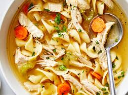

Easy Chicken Noodle Soup

Ingredients
- 2 tbsp. olive Oil
- 1 cup Carrots (peeled and sliced thin)
- 1 cup Celery (sliced thin)
- 1 cup Yellow onion (peeled and diced small)
- 2 Garlic cloves (minced)
- 64 oz. 8 cups Chicken broth
- 2 Bay leaves
- 1 tsp. Fresh thyme
- 1/2 tsp. Fried oregano
- 1 tsp. Pepper
- 12 oz. Of your oasta of choice
- 2 cups Shredded cooked chicken
- 4 tbsp. fresh flat-leaf parsley leaves (finely chopped)
- salt and pepper (to taste)
Instructions
- In a stockpot, add the oil and heat over medium-high heat to warm
- Add carrots, celery, onion, and sauté for 7 minutes, or until vegetables begin to soften. (stir intermittently)
- Add chicken broth, bay leaves, thyme, oregano, pepper, and bring to a boil.
- Allow mixture to boil gently for roughly 5 minutes or until vegetables are fork-tender.
- Add your pasta of choice and boil mixture for 10 minutes, or until noodles are soft and cooked. (if more broth is needed, add more water, and or broth to the pot)
- Add chicken and parsley and boil for another 1 to 2 minutes, or until chicken is warmed through.
- Salt to taste.
- Serve.
Return to Main